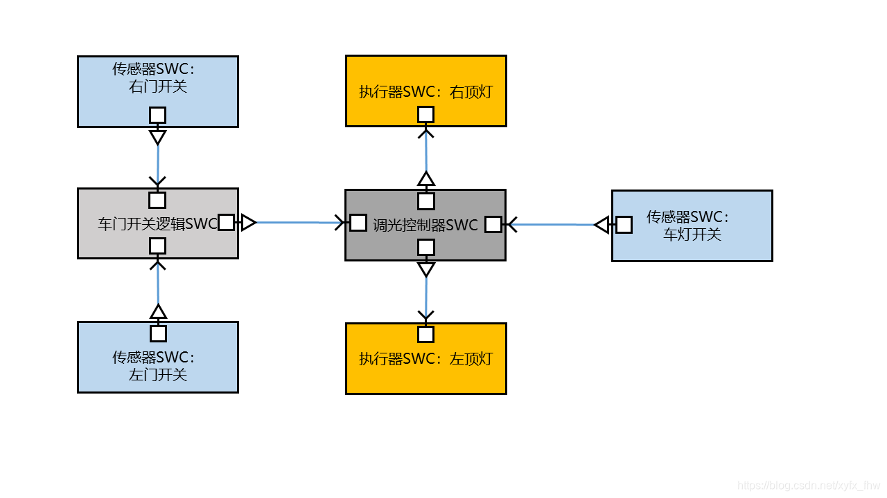
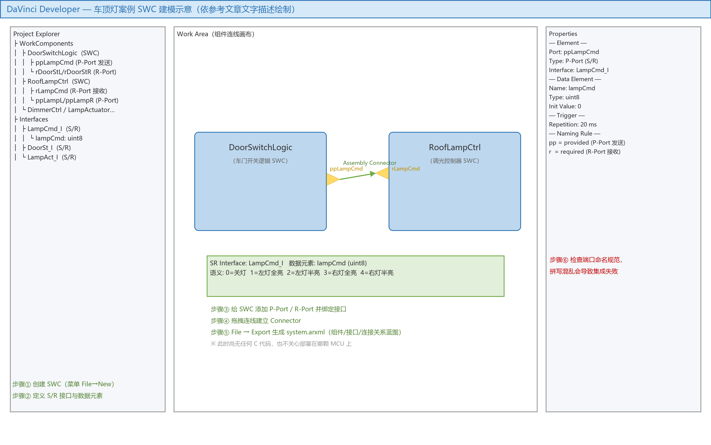
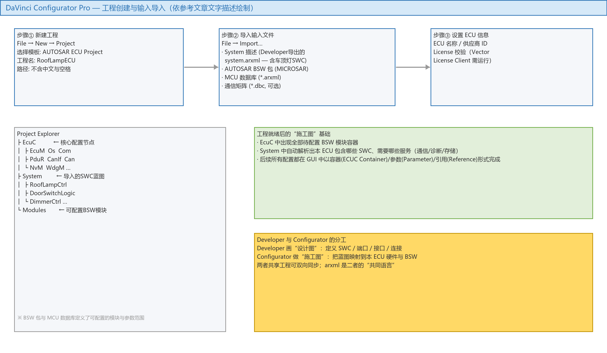
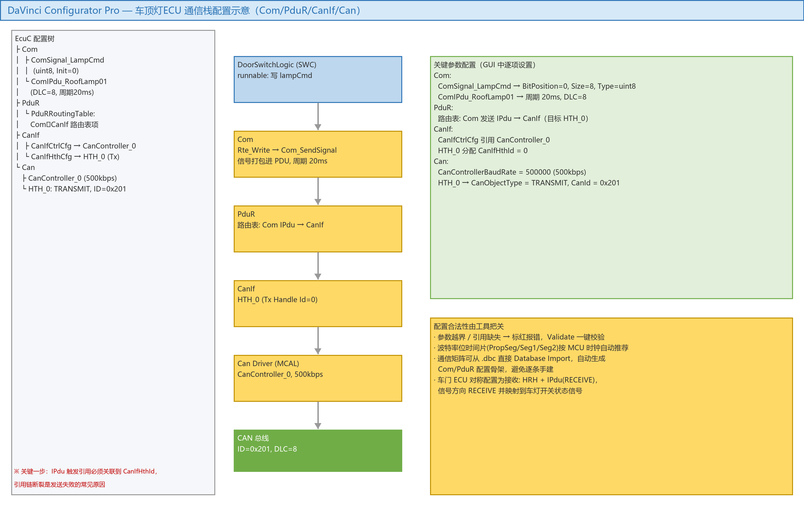
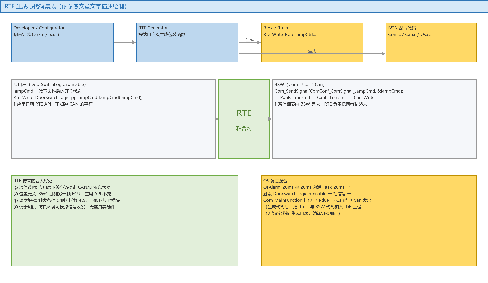
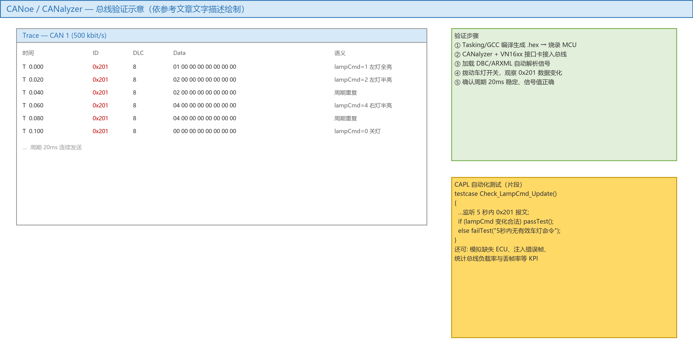

AutoSar实战：以车顶灯功能为例的开发全流程
本篇以车顶灯控制功能为例（承接方法论篇中图1-1的 7 个 SWC 划分），完整走通从需求设计、DaVinci Developer 系统建模、DaVinci Configurator BSW 配置、RTE 生成、应用层代码填充，到编译烧录与总线验证的全流程。每一步给出工具配置方法示意与关键配置代码。
一、案例需求与系统设计
1.1 功能需求描述
需求：驾驶员按下左/右车门上的门开关时，对应侧车内顶灯点亮；开关松开后顶灯半亮（延时调光）；总开关关闭时全部熄灭。该功能横跨两颗 ECU——门开关信号在车门 ECU 采集，顶灯驱动在车顶灯 ECU 执行，两者通过 CAN 总线通信。
| 条目 | 内容 |
|---|---|
| 输入 | 左/右车门开关状态（车门 ECU 的 GPIO/ADC 采集，经消抖） |
| 输出 | 左/右顶灯驱动（车顶灯 ECU 输出调光 PWM） |
| 跨ECU通信 | 车灯命令 lampCmd（uint8：0=关灯 1=左灯全亮 2=左灯半亮 3=右灯全亮 4=右灯半亮），CAN 报文 ID=0x201，周期 20ms，500kbps |
| 时序要求 | 从开关动作到顶灯响应 ≤ 100ms（含消抖与总线传输） |
1.2 SWC 划分与系统架构
按"高内聚低耦合"原则，把功能拆解为 7 个 SWC（详见方法论篇图1-1）：车门 ECU 侧为传感器SWC（左/右门开关）与车门开关逻辑SWC；车顶灯 ECU 侧为调光控制器SWC、执行器SWC（左/右顶灯）与传感器SWC（车灯总开关）。本篇聚焦核心链路：车门开关逻辑SWC（DoorSwitchLogic）→ 车灯命令 → 调光控制器SWC（RoofLampCtrl）这条跨 ECU 的 S/R 通信。

二、系统建模（Developer）
2.1 建模操作步骤
打开 DaVinci Developer，像画电路图一样设计软件"蓝图"。此阶段不写任何 C 代码，也不关心组件部署在哪颗 MCU 上。动手建模前，先确认本章的输入内容与前置条件是否齐备：
| 类别 | 条目 | 内容说明 |
|---|---|---|
| 输入内容 | 功能需求 | 1.1 节的需求描述与时序要求（开关动作→顶灯响应 ≤ 100ms），决定接口数据定义与后续触发周期 |
| SWC 划分方案 | 1.2 节确定的 7 个 SWC 清单及端口连接关系（评审通过），本篇重点为 DoorSwitchLogic → RoofLampCtrl 跨 ECU 链路 | |
| 通信参数约定 | 跨 ECU 通信定义：CAN 报文 ID=0x201、周期 20ms、500kbps，lampCmd 取值表（0=关灯 1~4=左/右灯全亮/半亮） | |
| 前置条件 | 工具环境 | DaVinci Developer 已安装并加载有效许可证（如提示无许可证，需运行 Vector License Client 加载） |
| 规范版本 | 工具的 AUTOSAR 模板版本与目标平台一致（本例为 Classic Platform），避免后续 Configurator 导入 arxml 时报版本不匹配 | |
| 命名规范 | 团队已约定端口前缀（pp = provided、r = required）及接口/数据元素命名规则，建模全程统一遵守 | |
| 角色分工 | SWC 划分方案已由系统架构师评审确认，建模工程师熟悉 DaVinci Developer 基本操作（新建组件、接口、端口、连线、导出） |
输入与条件齐备后，按以下步骤操作：
（1）创建 SWC：菜单 File → New → Software Component（或在 Project Explorer 的 Components 节点右键创建），DoorSwitchLogic、RoofLampCtrl 组件类型选 Application Component（应用逻辑组件），并按 1.2 节清单补齐其余 5 个传感器/执行器组件；命名采用"功能语义 + 大驼峰"风格，组件 UUID 由工具自动生成，导出 arxml 时作为唯一标识。
（2）定义 S/R 接口：在 Interfaces 根节点右键 → Create Sender/Receiver Interface，创建 LampCmd_I；选中接口后添加数据元素 lampCmd，并在属性面板设置关键属性：
| 属性 | 设置值 | 说明 |
|---|---|---|
| 数据类型 | uint8 | 1 字节，取值 0~4（0=关灯，1~4=左/右灯全亮/半亮） |
| 初始值 Init Value | 0 | 0=关灯，防止上电读到随机值误点亮顶灯 |
| 传输模式 | 非排队（Last is Best） | 周期 20ms 覆盖式更新，接收端始终读到最新命令 |
（3）添加端口：选中 SWC 右键 → Add Port → Sender/Receiver Port，绑定到 LampCmd_I。本篇核心链路只有两个端口：
| 端口名 | 所属 SWC | 端口类型 | 通信方向 | 绑定接口 |
|---|---|---|---|---|
| ppLampCmd | DoorSwitchLogic | P-Port（provided） | Sender（发送） | LampCmd_I |
| rLampCmd | RoofLampCtrl | R-Port（required） | Receiver（接收） | LampCmd_I |
（4）连线建立 Assembly Connector：在 Composition Editor 画布中，从 DoorSwitchLogic 的 ppLampCmd 拖拽到 RoofLampCtrl 的 rLampCmd，工具校验两端绑定接口完全一致后自动生成连线；若连线失败，多半是端口绑定了不同接口或数据元素类型不一致。本例的连线描述的是跨 ECU 的"逻辑数据流"，物理传输路径（CAN 报文打包与收发）由第三章通信栈配置落地。
（5）导出 system.arxml：先运行模型校验（Validate），确认无未绑定端口的悬空 SWC、无不一致连线，再 File → Export 导出 system.arxml；导出路径避免中文与空格，与 3.1 节 Configurator 工程创建要求保持一致。
（6）命名规范检查：逐项核对三处命名——SWC 名、端口名（pp/r 前缀与端口方向对应）、数据元素名。这些名字会被 RTE 原样编进生成的 API（见 4.1 节 Rte_Write_DoorSwitchLogic_ppLampCmd_lampCmd），建模阶段的拼写错误会一路带到应用代码的调用处，集成时才暴露，排查代价高。
（7）定义 Runnable 与触发事件：在 SWC 的 Internal Behavior 中创建运行实体（如 DoorSwitchLogic_Main、RoofLampCtrl_Main），触发方式为周期型（20ms，与通信周期一致）。Runnable 此刻只是"函数模板"，真正挂载到哪个 OS 任务由 4.2 节的映射步骤完成。

2.2 系统描述文件
导出的 system.arxml 是 AUTOSAR 的通用描述语言（XML 格式的"系统说明书"），记录所有组件、接口、端口及连接关系，是后续所有工具的"共同语言"。车灯命令接口的片段如下：
注意命名规范：pp = providing port（发送端口），r = receiving/required port（接收端口）。虽然只是字符串，但如果拼错或语义混乱，后面集成一定会出问题。
三、ECU配置（Configurator）
3.1 工程创建与输入导入
DaVinci Developer 画"设计图"，DaVinci Configurator Pro（DCP）做"施工图"——把抽象的软件架构映射到具体 ECU 硬件上。工程创建三步：
（1）新建工程：File → New → Project，选择 AUTOSAR ECU Project 模板，工程名 RoofLampECU，安装路径不要有中文或空格；
（2）导入输入文件：File → Import 导入 Developer 导出的 system.arxml（含车顶灯 SWC）、AUTOSAR BSW 包（MICROSAR，由芯片厂商或 Vector 提供）、MCU 数据库（描述 CAN 控制器数量、内存映射等外设资源），通信矩阵 .dbc 可选导入；
（3）设置 ECU 信息：ECU 名称、供应商 ID 等；启动时若提示 "No license for AUTOSAR Explorer2" 则是许可证未加载，需运行 Vector License Client。

导入完成后，Project Explorer 中的 EcuC 是核心配置节点，所有 BSW 模块配置都在其下以容器（ECUC Container）、参数（ECUC Parameter）、引用（ECUC Reference）三种元素展开。配置工作的本质，就是生成和编辑 ECU 配置描述文件（.ecuc）。
3.2 EcuM 与 Os 配置
EcuM（ECU状态管理器）负责上电、下电、睡眠与唤醒。在 EcuC → EcuM 下右键创建 EcuMGeneral 容器，配置默认关机目标与复位原因；若需睡眠功能，还要配置唤醒源（CAN 总线唤醒、KL15 等）：
Os（操作系统）是静态配置的，需配置应用、任务、计数器与警报。车顶灯 ECU 创建 OsApplication "App1"；任务 Task_20ms（优先级 10，完全抢占，Autostart=true，函数体 Task_20ms_Func）；计数器 SystemCounter（1ms 一个 tick）；警报 Alarm_20ms 关联 SystemCounter、周期 20、激活 Task_20ms——这样警报每 20ms 到期一次就触发一次车灯命令的发送：
任务堆栈 StackSize 需按函数调用深度与局部变量估算并留余量：过小会溢出，过大会浪费内存。
3.3 通信栈配置
通信栈自上而下为 Com → PduR → CanIf → Can，把 lampCmd 信号从应用层一路送到 CAN 总线：

（1）Can 模块（硬件层）：创建 CanController_0，CanControllerBaudRate=500000（500kbps），位时间片参数（PropSeg/Seg1/Seg2）按 MCU 时钟由工具自动推荐；创建发送硬件对象 HTH_0（TRANSMIT，CanId=0x201）。
（2）CanIf 模块（接口层）：创建 CanIfCtrlCfg 引用 CanController_0；创建 CanIfHthCfg 引用 HTH_0 并分配 CanIfHthId=0。车门 ECU 对称配置为接收（HRH + RECEIVE IPdu）。
（3）Com 模块（通信层）：创建信号 ComSignal_LampCmd（uint8，BitPosition=0，Size=8，InitValue=0）；创建 PDU ComIPdu_RoofLamp01（DLC=8，周期 20ms），把信号映射进 PDU，并将 IPdu 触发引用关联到 CanIfHthId 0。
（4）PduR 模块：路由表中添加"Com 发送 IPdu → CanIf"表项。
点击 Generate Code 后，工具生成符合 AUTOSAR 规范的 BSW 配置代码（字段顺序、内存对齐都不用操心），例如 CAN 控制器配置：
更换 MCU 平台时，只需切换硬件描述文件，大部分配置可复用，大幅提升移植效率。通信矩阵复杂时，可从 .dbc 直接 Database Import，工具自动生成 Com/PduR 配置骨架，避免逐条手建。
四、RTE生成与应用层代码
4.1 RTE 生成原理
RTE 是 AUTOSAR 架构中最关键的"粘合剂"——它把 Developer 里画的"连线"变成真正的函数调用。应用层不直接调 Can_Write()，而是调 RTE 生成的包装函数：

RTE 带来四大好处：通信透明（应用层不关心数据走 CAN/LIN 还是以太网）、位置无关（SWC 挪到另一颗 ECU，应用 API 不变）、调度解耦（触发条件定时/事件可改，不影响其他模块）、便于测试（仿真环境可模拟信号收发，无需真实硬件）。有了 RTE，应用代码几乎可以"一次编写，到处部署"。
4.2 Runnable 与 OS 任务映射
SWC 内部逻辑封装在 Runnable（运行实体）中，但 Runnable 必须 mapping（映射）到 OS 任务才能被调度——未映射的 Runnable 只是普通函数，Configurator 还会报错。映射通用规则：同类型/同周期的 Runnable 归并到同一任务，优先级匹配，多核时负载均衡。两颗 ECU 的 Runnable 映射关系：
| Runnable | 所属SWC | 映射任务 | 触发方式 |
|---|---|---|---|
| DoorSwitchLogic_Main | DoorSwitchLogic | Task_20ms（车门ECU） | 20ms 周期 |
| RoofLampCtrl_Main | RoofLampCtrl | Task_20ms（车顶灯ECU） | 20ms 周期 |
主函数与 OS 调度框架：
4.3 车顶灯应用代码实现
车门 ECU 侧——DoorSwitchLogic 的 runnable：读取左右门开关（经去抖），计算车灯命令并经 RTE 发送：
车顶灯 ECU 侧——RoofLampCtrl 的 runnable：接收车灯命令，计算调光占空比并驱动顶灯：
说明：lampCmd 初始值在 arxml 中定义为 0，DaVinci 生成代码时会自动初始化缓冲区，避免上电瞬间 RTE 传递随机内存值；车门 ECU 与车顶灯 ECU 的代码可完全并行开发——这正是 RTE"位置无关"带来的好处。
五、集成编译与总线验证
5.1 编译链接与烧录
将生成的所有代码（Rte.c/Rte.h、Com.c、Can.c、Os.c 等配置代码）与应用层手写代码合并，在 IDE 中添加源文件并将生成目录加入编译器包含路径（Include Paths），随后编译、烧录：
（1）使用 Tasking 或 GCC 编译整个工程，生成 .hex/.elf 可执行文件；
（2）烧录进 MCU（车门 ECU 与车顶灯 ECU 各一份）；
（3）上电后 EcuM_Init 完成模块初始化（顺序由 BswM 决定：先 Mcu、Can，再 Com、Dcm，防止 CAN 控制器未就绪导致通信失败），StartOS 后任务开始周期调度。
5.2 总线验证与自动化测试
打开 CANalyzer（或 CANoe），通过 VN16xx 接口卡接入 CAN 总线，加载 DBC/ARXML 后自动解析报文。拨动车门开关，应能捕获到周期 20ms 的 0x201 报文，且数据随开关状态变化：

CANoe 不只是"抓包工具"，还可以构建虚拟验证环境：模拟缺失 ECU 的行为、注入错误帧测试容错机制、统计总线负载率等 KPI，并可用 CAPL 脚本做自动化测试：
至此，"建模 → 配置 → 生成 → 验证"的闭环完成：车顶灯功能从一份需求变成了总线上真实可测的报文。
六、常见问题与最佳实践
6.1 常见问题排查
新手用 DaVinci 工具链最容易踩以下几类"雷"：
| 问题现象 | 可能原因 | 排查与解决 |
|---|---|---|
| DCP 无法加载 Developer 导出的 arxml | 工具版本不匹配（如 Developer 用 AUTOSAR 4.4、DCP 只支持 4.3） | 统一工具版本，或导出时选择向下兼容模式 |
| 代码编译通过，但信号没发出来 | Com 未启用周期发送；Runnable 未映射到任务；IPdu 未关联 CanIfHth；CAN 控制器未激活 | 用 DCP 的 Dependency Check / Validate 查缺失依赖；按 Com IPdu → CanIf Hth → Can HOH → CanController 逐层检查 |
| 总线负载过高 | 信号频繁发送且未合理打包 | 合并低优先级信号到同一 PDU；调整非关键信号周期（如 10ms→50ms）；用 Com SignalGroup 减少调度开销 |
| 上电瞬间收到随机值 | 信号未定义初始值 | 在 arxml 中明确 INIT-VALUE（如 lampCmd=0），生成代码自动初始化缓冲区 |
| 接收方解析数据错乱 | 浮点数直接上总线，字节序/精度不一致 | 统一整型 + 缩放因子（factor=0.1），在模型中标注转换规则 |
| Os 任务不执行 | Alarm 周期或 Counter 基准错；优先级冲突；堆栈溢出；未 StartOS | 核对 TicksPerBase 与 CycleTime；检查优先级唯一性；增大栈或用调试器观测；确认 StartOS 已调用 |
| 提示 "No license for AUTOSAR Explorer2" | 许可证未加载或过期 | 检查 Vector License Client 运行状态，确认许可证文件含所需特性 |
6.2 最佳实践建议
（1）arxml 管理策略：按"整车 → 域控制器 → 单 ECU"分层管理；工程文件（.dpa）与应用代码纳入 Git 等版本控制，重大变更前备份并导出 .arxml 基线；
（2）善用工具校验：生成代码前务必 Validate，解决所有 error 与 warning（警告也可能隐含问题）；DCP 内置 Rule Checker 能自动检测参数越界、依赖缺失；
（3）信号布局优化：高频信号尽量放 PDU 前部减少位填充影响；相关信号（如车速+转速）打包同一帧保证时间一致性；用 Update-Bit 机制避免误判无效更新；
（4）启动时序控制：用 BswM 配置模块初始化顺序——先 Mcu、Can，再 Com、Dcm，防止因 CAN 控制器未就绪导致通信失败；
（5）模块裁剪：低端 ECU 不必启用全套 BSW，关闭非必要模块（如 FIM）可节省 ROM 15KB 以上；
（6）命名规范：建立统一命名规范（如 模块名_功能_索引：CanIfCtrlCfg_CAN0、ComSignal_LampCmd），系统架构师（Developer）与 BSW 工程师（Configurator）明确 arxml 交换流程与版本对应关系。
参考来源：CSDN《新手入门必看：Vector工具链基础操作与AUTOSAR关联》（weixin_42599908）、《AUTOSAR开发实战：手把手教你用DaVinci工具链配置ECU基础软件》（weixin_33859231）、《全面讲解Vector工具链在AUTOSAR通信矩阵生成中的作用》（weixin_31659095）；辅助参考：《(二)DaVinci Developer AutoSAR工具 SWC Component 中Port口配置方法》（weixin_42602687）、《[AUTOSAR OS] 1 AUTOSAR操作系统的基础工程（上）》（RomanticRealist）、《[AutoSar]基础部分 RTE 08 runnable mapping》（weixin_42447823）、《DaVinci工具链之DaVinci Configurator工程创建》（qq_40242571）。工具界面示意图依上述文章文字描述绘制，代码为按原文整理的示例片段。